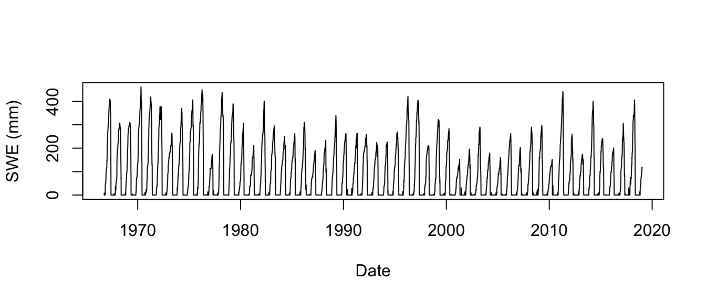
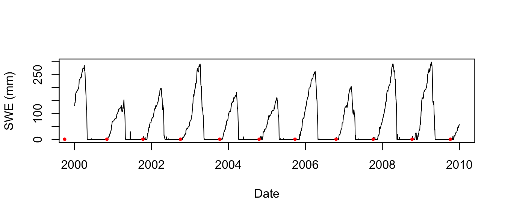

The SNOTEL network is composed of over 800 automated data collection sites located in remote, high-elevation mountain watersheds in the western U.S. They are used to monitor snowpack, precipitation, temperature, and other climatic conditions. The data collected at SNOTEL sites are transmitted to a central database. This package queries this centralized database to provide easy access to these data and additional seasonal metrics of snow accumulation (snow phenology).
The SNOTEL network consists of a vast number of observation sites, all of them listed together with their meta-data on the SNOTEL website. The snotel_info() function allows you to query this table and import it as a neat table into R. Some of the meta-data, in particular the site id (site_id), you will need of you want to download the data for a site. You can save this table to disk using the path variable to specify a location on your computer where to store the data as a csv. If this parameter is missing the data is returned as an R variable.
# download and list site information
site_meta_data <- snotel_info()
head(site_meta_data)
#> network state site_name
#> 1 SNTL AK galena ak
#> 2 SNTL MT jl meadow
#> 3 SNTL NV oneil creek
#> 4 SNTL AK flower mountain
#> 5 SNTL CA fredonyer peak
#> 6 SNTL UT bobs hollow
#> description start end
#> 1 Louden Slough-Yukon River (190902051104) 2018-08-01 2019-01-02
#> 2 Dad Creek-Medicine Lodge Creek (100200011202) 2017-10-01 2019-01-02
#> 3 Pole Creek (170402130106) 2018-06-01 2019-01-02
#> 4 Porcupine Creek (190103031206) 2017-08-01 2019-01-02
#> 5 Lower Dry Lake-Frontal Eagle Lake (180800030304) 2016-10-01 2019-01-02
#> 6 North Fork Chalk Creek (160300051401) 2016-10-01 2019-01-02
#> latitude longitude elev county site_id
#> 1 64.70 -156.71 125 Yukon-koyukuk 429
#> 2 44.78 -113.12 2682 Beaverhead 1287
#> 3 41.86 -115.08 1987 Elko 1272
#> 4 59.40 -136.28 765 Haines 1285
#> 5 40.69 -120.61 2197 Lassen 1277
#> 6 38.95 -112.15 2840 Millard 1278If you downloaded the meta-data for all sites you can make a selection using either geographic coordinates, or state columns. For the sake of brevity I’ll only query data for one site using its site_id below. By default the data, reported in imperial values, are converted to metric measurements.
# downloading data for a random site
snow_data <- snotel_download(site_id = 670, internal = TRUE)
#> Downloading site: northeast entrance , with id: 670
# show the data
head(snow_data)
#> network state site_name description start
#> 1 SNTL MT northeast entrance Cold Creek (100700010602) 1937-10-01
#> 2 SNTL MT northeast entrance Cold Creek (100700010602) 1937-10-01
#> 3 SNTL MT northeast entrance Cold Creek (100700010602) 1937-10-01
#> 4 SNTL MT northeast entrance Cold Creek (100700010602) 1937-10-01
#> 5 SNTL MT northeast entrance Cold Creek (100700010602) 1937-10-01
#> 6 SNTL MT northeast entrance Cold Creek (100700010602) 1937-10-01
#> end latitude longitude elev county site_id
#> 1 2019-01-02 45.01 -110.01 2240 Yellowstone National Park 670
#> 2 2019-01-02 45.01 -110.01 2240 Yellowstone National Park 670
#> 3 2019-01-02 45.01 -110.01 2240 Yellowstone National Park 670
#> 4 2019-01-02 45.01 -110.01 2240 Yellowstone National Park 670
#> 5 2019-01-02 45.01 -110.01 2240 Yellowstone National Park 670
#> 6 2019-01-02 45.01 -110.01 2240 Yellowstone National Park 670
#> date snow_water_equivalent precipitation_cummulative
#> 1 1966-10-01 0 NA
#> 2 1966-10-02 8 NA
#> 3 1966-10-03 0 NA
#> 4 1966-10-04 0 NA
#> 5 1966-10-05 0 NA
#> 6 1966-10-06 0 NA
#> temperature_max temperature_min temperature_mean precipitation
#> 1 NA NA NA NA
#> 2 NA NA NA NA
#> 3 NA NA NA NA
#> 4 NA NA NA NA
#> 5 NA NA NA NA
#> 6 NA NA NA NA# A plot of snow accummulation through the years
plot(as.Date(snow_data$date),
snow_data$snow_water_equivalent,
type = "l",
xlab = "Date",
ylab = "SWE (mm)")
Although the main function of the package is to provide easy access to the SNOTEL data a function snotel_phenology() is provided to calculate seasonal metrics of snow deposition.
# subset data to the first decade of the century
snow_data_subset <- subset(snow_data, as.Date(date) > as.Date("2000-01-01") &
as.Date(date) < as.Date("2010-01-01"))
# plot the snow water equivalent time series
plot(as.Date(snow_data_subset$date),
snow_data_subset$snow_water_equivalent,
type = "l",
xlab = "Date",
ylab = "SWE (mm)")
# plot the dates of first snow accumulation as a red dot
points(as.Date(paste(phenology$year, phenology$first_snow_acc),"%Y %j"),
rep(1,nrow(phenology)),
col = "red",
pch = 19,
cex = 0.5)
A list of all provided snow phenology statistics is provided below.
| Value | Description |
|---|---|
| year | The year in which the an event happened |
| first_snow_melt | day of first full snow melt (in DOY) |
| cont_snow_acc | start of continuous snow accumulation / retention (in DOY) |
| last_snow_melt | day on which all snow melts for the remaining year (in DOY) |
| first_snow_acc | day on which the first snow accumulates (in DOY) |
| max_swe | maximum snow water equivalent value during a given year (in mm) |
| max_swe_doy | day on which the maximum snow water equivalent value is reached (in DOY) |